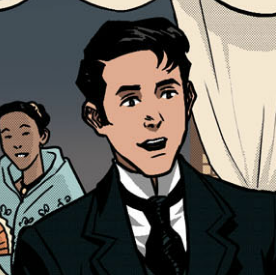
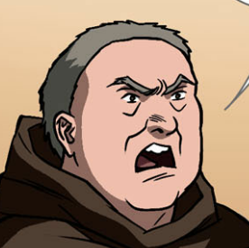
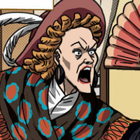
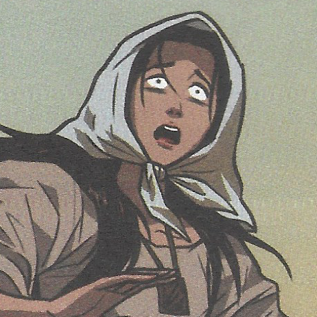

| Juan Crisóstomo Ibarra y Magsalin |  | Also known as Ibarra, he's the main protagonist of the story. He's the son of Don Rafael, and went to Europe to study. He's known to be smart, kind and is not afraid to stand up for himself or for others. | ||||||||||||||
| Maria Clara |  | She's the lover of Ibarra and the daughter of Capitan Tiago but Padre Damaso is her biological father. She's known to be kindhearted and generous. | ||||||||||||||
| Padre Damaso |  | He's the main antagonist of this story, He's known to be very rude, loud, and cocky. He doesn't like Ibarra, he used to be the town's priest, and he's Maria Clara's true father. | ||||||||||||||
| Donya Victorina |  | She's one of the female characters of the story, she's a Filipina who acts like a Spaniard. She dresses fancy, with her face entirely covered in makeup. She's known to look down on her own kind. Instead of marrying anyone of her kind, she rejects them and would try marrying a Spaniard. | ||||||||||||||
| Sisa |  | One of the female characters in the story, she's the mother of the 2 siblings; Crispin and Basilio, her husband abuses her. After her sons go missing and then being publicly shamed, she lost her sanity. | Sources | Crisostomo Ibarra. Noli Me Tangere Wiki. (n.d.). Retrieved September 20, 2022, from https://noli-me-tangere.fandom.com/wiki/Crisostomo_Ibarra, Maria Clara. Noli Me Tangere Wiki. (n.d.). Retrieved September 20, 2022, from https://noli-me-tangere.fandom.com/wiki/Maria_Clara, Padre Damaso. Noli Me Tangere Wiki. (n.d.). Retrieved September 20, 2022, from https://noli-me-tangere.fandom.com/wiki/Padre_Damaso, Doña Victorina. Noli Me Tangere Wiki. (n.d.). Retrieved September 20, 2022, from https://noli-me-tangere.fandom.com/wiki/Do%C3%B1a_Victorina, Sisa. Noli Me Tangere Wiki. (n.d.). Retrieved September 20, 2022, from https://noli-me-tangere.fandom.com/wiki/Sisa |